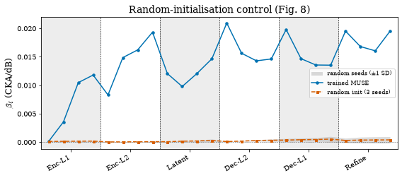
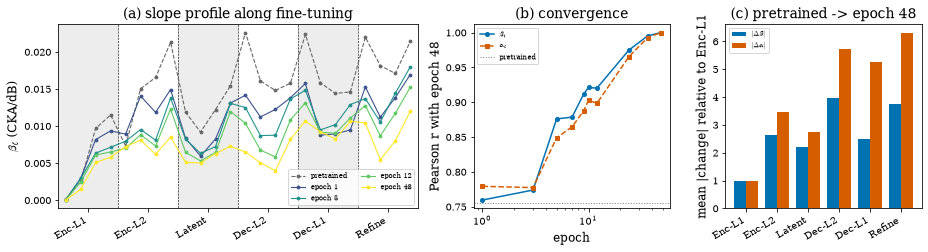

Origin of the profile in training#
Is the depth-organised profile a property of the MUSE architecture, its U-Net skip topology and time pooling, or something training puts there? Two controls answer this from opposite ends. An untrained MUSE instantiated from the same configuration with random weights, over three seeds and the same 824 × 41 × five-noise sweep, shows no profile: CKA stays near unity everywhere and the per-layer slopes sit one to two orders of magnitude below the trained model’s (paper Fig. 8). CKA sweeps at ten intermediate checkpoints of the 50-epoch reverb fine-tuning run then show the profile already organised at the first probed checkpoint and only sharpening, with the change concentrated in exactly the stages the profile labels as sensitive. Both parts run from the shipped per-layer tables through se_probe.profiles.
Runtime: under 30 seconds on any device (a gated cell can additionally instantiate the random network).
import sys
from pathlib import Path
REPO = Path.cwd().resolve()
while REPO.name != "SE-Probe" and REPO.parent != REPO:
REPO = REPO.parent
if str(REPO) not in sys.path:
sys.path.insert(0, str(REPO))
def _rel(p):
"""Repo-relative path for display (absolute only if outside the repo)."""
try:
return p.relative_to(REPO)
except ValueError:
return p
from se_probe.device import device_info, get_device
from se_probe.plotting import apply_paper_rcparams
apply_paper_rcparams()
DEVICE = get_device()
print(device_info(DEVICE))
import numpy as np
import pandas as pd
DATA_DIR = REPO / ("results_df" if (REPO / "results_df").exists() else "results_demo")
TABLES = REPO / "results_tables"
print(f"Using data from: {_rel(DATA_DIR)}")
print(f"Paper tables from: {_rel(TABLES)}")
Detected device: cpu
Using data from: results_demo
Paper tables from: results_tables
Random-initialisation control#
The trained slope profile drawn in the figure is the 18-noise fit of the full sweep, while the control grid covers the five test-split noises, exactly as in the paper; the quoted factor compares the trained profile refitted on those same five noises against the largest untrained maximum.
import json
from se_probe.layers import layout, short_labels
from se_probe.profiles import random_init_summary
rand = pd.read_csv(TABLES / "random_init/fig_v6_random_init_824_values.csv").sort_values("depth")
trained = pd.read_csv(TABLES / "snr/fits_muse_snr_jobB.csv").sort_values("depth")
assert list(rand["depth"]) == list(range(24)) == list(trained["depth"])
# fingerprint of the SCAFE five-noise table (the superseded PCAFETER table has max |beta_s0| = 0.000289377199)
assert abs(rand["beta_s0"].abs().max() - 0.000284817601) < 1e-11, "not the canonical five-noise random-init table"
ref = {e["label"]: e for e in json.load(open(TABLES / "random_init/IIIE_random_init.json"))}["NEW five (SCAFE)"]
# The factor compares like with like: the trained profile fitted on the same five test-split
# noises as the control grid (the mean of the per-noise slopes over those five), not the
# 18-noise profile drawn in the figure.
from se_probe.layers import VOICEBANK_DEMAND_TEST_NOISES
per_noise = pd.read_csv(TABLES / "snr/per_noise_beta_muse.csv", index_col=0).loc[trained["layer"]]
trained5 = per_noise[VOICEBANK_DEMAND_TEST_NOISES].mean(axis=1).to_numpy()
summary = random_init_summary(trained_beta=trained5,
seed_betas={s: rand[f"beta_s{s}"].to_numpy() for s in range(3)},
cka_min=ref["min_cka"])
labels = short_labels("muse", trained["layer"])
print(f"min CKA over (layer, level) means, all seeds: {ref['min_cka']:.4f} (paper 0.9802)")
for s in range(3):
p = summary["per_seed"][str(s)]
print(f"seed {s}: max beta {p['max_beta']:.5f} (paper {[0.00028, 0.00105, 0.00045][s]:.5f}) | "
f"rho(depth, beta) {p['rho_depth_beta']:+.2f} (p = {p['rho_p']:.3f}) (paper {[+0.43, +0.86, -0.07][s]:+.2f})")
assert abs(p["rho_depth_beta"] - [+0.43, +0.86, -0.07][s]) < 5e-3
assert abs(p["rho_depth_beta"] - ref["rho_depth_beta"][str(s)]["spearman"]) < 1e-9
print(f"trained peak beta (five test noises) {summary['trained_peak_beta']:.5f} at {labels[summary['trained_peak_depth']]} (paper 0.02261 at Dec-L2.0)")
print(f"trained peak beta (18 noises, Fig. 8) {trained['beta'].max():.5f} at {labels[int(trained['beta'].idxmax())]}")
assert abs(summary["trained_peak_beta"] - 0.02261) < 5e-5
print(f"trained peak / largest untrained maximum = {summary['factor_trained_over_largest_seed']:.1f}x (paper 21.5)")
assert abs(summary["factor_trained_over_largest_seed"] - 21.5) < 0.1
assert labels[summary["trained_peak_depth"]] == "Dec-L2.0"
assert abs(ref["min_cka"] - 0.9802) < 5e-5
signs = [int(np.sign(summary["per_seed"][str(s)]["rho_depth_beta"])) for s in range(3)]
sig = [summary["per_seed"][str(s)]["rho_p"] < 0.05 for s in range(3)]
print("sign pattern of rho(depth, beta):", signs, "| reaches 5% level:", sig, " (paper: two positive and significant, the third none)")
assert signs == [1, 1, -1] and sig == [True, True, False]
min CKA over (layer, level) means, all seeds: 0.9802 (paper 0.9802)
seed 0: max beta 0.00028 (paper 0.00028) | rho(depth, beta) +0.43 (p = 0.035) (paper +0.43)
seed 1: max beta 0.00105 (paper 0.00105) | rho(depth, beta) +0.86 (p = 0.000) (paper +0.86)
seed 2: max beta 0.00045 (paper 0.00045) | rho(depth, beta) -0.07 (p = 0.756) (paper -0.07)
trained peak beta (five test noises) 0.02261 at Dec-L2.0 (paper 0.02261 at Dec-L2.0)
trained peak beta (18 noises, Fig. 8) 0.02094 at Dec-L2.0
trained peak / largest untrained maximum = 21.5x (paper 21.5)
sign pattern of rho(depth, beta): [1, 1, -1] | reaches 5% level: [True, True, False] (paper: two positive and significant, the third none)
Random weights are not free of depth structure: two of the three seeds give a positive rank correlation between depth and slope. What distinguishes the trained model is effect size, a factor of about twenty on the largest untrained slope, together with the skip-junction peaks that have no counterpart in the untrained network.
import matplotlib.pyplot as plt
from se_probe.plotting import OKABE_ITO, depth_axis
lay = layout("muse")
x = np.arange(24)
fig, ax = plt.subplots(figsize=(8, 3.6))
depth_axis(ax, lay)
ax.axhline(0, color="k", ls=":", lw=0.6)
ax.fill_between(x, rand["beta_mean"] - rand["beta_sd"], rand["beta_mean"] + rand["beta_sd"],
color="0.6", alpha=0.35, lw=0, label=r"random seeds ($\pm$1 SD)")
ax.plot(x, trained["beta"], "o-", ms=3.5, color=OKABE_ITO["blue"], label="trained MUSE")
ax.plot(x, rand["beta_mean"], "s--", ms=3, color=OKABE_ITO["vermillion"], label="random init (3 seeds)")
ax.set_ylabel(r"$\beta_\ell$ (CKA/dB)")
ax.set_title("Random-initialisation control (Fig. 8)")
ax.legend(loc="center right", fontsize=8)
plt.tight_layout();

Optional: instantiate the untrained network#
se_probe.muse.model.load_random_init_muse_activation_extractor(seed) builds the control model exactly as the sweep did (same config, torch.manual_seed(seed), no checkpoint). Set SE_PROBE_RUN_INFERENCE=1 (and have run python scripts/setup.py for the config file) to compute one CKA value on a synthetic clip.
import os
if os.environ.get("SE_PROBE_RUN_INFERENCE") == "1":
from se_probe.cka import cka
from se_probe.muse.model import load_random_init_muse_activation_extractor
rng = np.random.default_rng(0)
sr = 16000
clean = rng.standard_normal(sr * 2).astype("float32") * 0.05
noise = rng.standard_normal(sr * 2).astype("float32") * 0.05
sig_p = float((clean ** 2).mean())
noise_p = sig_p / (10 ** (0.0 / 10))
noisy = clean + noise * np.sqrt(noise_p / max(float((noise ** 2).mean()), 1e-12))
extractor = load_random_init_muse_activation_extractor(seed=0, device=DEVICE)
act_clean, _ = extractor(clean)
act_noisy, _ = extractor(noisy)
layer = next(iter(act_clean))
val = cka(act_clean[layer], act_noisy[layer])
print(f"Untrained MUSE (seed 0), CKA at 0 dB on a synthetic clip ({layer}): {float(val[0]):.4f}")
else:
print("SE_PROBE_RUN_INFERENCE not set — skipping the random-init instantiation. Set it to '1' to enable.")
SE_PROBE_RUN_INFERENCE not set — skipping the random-init instantiation. Set it to '1' to enable.
Emergence over fine-tuning#
The reverb-competent MUSE checkpoint is the endpoint of a 50-epoch fine-tuning run, and the artifacts include CKA sweeps at ten intermediate checkpoints (epochs 1, 3, 5, 7, 9, 10, 12, 24, 36 and 48) on the noise axis, 824 utterances × 41 SNRs × five noises. Refitting the per-layer line at each checkpoint lets us watch the profile form. The convergence table below gives, per checkpoint, the Pearson correlation of the slope and intercept profiles with the final epoch; the concentration statistics compare the pretrained-to-final change in the decoder and refinement stages against the first encoder stage.
import json
from se_probe.layers import MUSE_STAGE_LABELS, layout, muse_stage_of, probed_layers
from se_probe.profiles import emergence_convergence
EPOCHS = [1, 3, 5, 7, 9, 10, 12, 24, 36, 48]
t = pd.read_csv(TABLES / "emergence/IIIF_per_layer_profiles_new5.csv")
assert list(t["layer"]) == probed_layers("muse", t["layer"]), "rows are not in depth order"
profiles = {"pretrained": pd.DataFrame({"layer": t["layer"], "alpha": t["alpha_pre"], "beta": t["beta_pre"]})}
for e in EPOCHS:
profiles[e] = pd.DataFrame({"layer": t["layer"], "alpha": t[f"alpha_e{e}"], "beta": t[f"beta_e{e}"]})
res = emergence_convergence(profiles, final_key=48, pretrained_key="pretrained")
conv = res["convergence"].set_index("epoch")
conc = res["concentration"]
print(conv.round(4))
beta_r_vs_final alpha_r_vs_final rms_dbeta_vs_final
epoch
pretrained 0.7553 0.7273 0.0086
1 0.7596 0.7793 0.0047
3 0.7739 0.7774 0.0029
5 0.8760 0.8489 0.0037
7 0.8786 0.8647 0.0025
9 0.9118 0.8876 0.0023
10 0.9212 0.9028 0.0023
12 0.9202 0.8985 0.0022
24 0.9748 0.9652 0.0008
36 0.9951 0.9926 0.0004
48 1.0000 1.0000 0.0000
ref = {e["label"]: e for e in json.load(open(TABLES / "emergence/IIIF_emergence.json"))}
e1, e36 = conv.loc[1, "beta_r_vs_final"], conv.loc[36, "beta_r_vs_final"]
print(f"beta profile r with epoch 48: epoch 1 {e1:.2f} (paper 0.76) -> epoch 36 {e36:.4f} (paper >= 0.99)")
print(f"pretrained checkpoint vs epoch 48: beta r {conc['pretrained_beta_r_vs_final']:.2f} (paper 0.76), alpha r {conc['pretrained_alpha_r_vs_final']:.2f} (paper 0.73)")
assert abs(e1 - 0.76) < 5e-3 and e36 >= 0.99 and abs(conv.loc[48, "beta_r_vs_final"] - 1.0) < 1e-9
assert abs(conc["pretrained_beta_r_vs_final"] - 0.76) < 5e-3 and abs(conc["pretrained_alpha_r_vs_final"] - 0.73) < 5e-3
assert abs(e1 - ref["new5"]["headline"]["e1_beta_r"]) < 1e-9
rb, ra = conc["ratio_dbeta_sensitive_over_reference"], conc["ratio_dalpha_sensitive_over_reference"]
print(f"mean |delta beta| decoder+refinement / Enc-L1 = {rb:.2f}x (shipped new5 3.40, old5 {ref['old5']['concentration']['ratio_dbeta_decref_over_encl1']:.2f}; paper quotes 3x)")
print(f"mean |delta alpha| decoder+refinement / Enc-L1 = {ra:.2f}x (shipped new5 5.77, old5 {ref['old5']['concentration']['ratio_dalpha_decref_over_encl1']:.2f}; paper quotes 5.8x)")
assert abs(rb - 3.40) < 0.05 and abs(ra - 5.77) < 0.05
assert abs(rb - ref["new5"]["concentration"]["ratio_dbeta_decref_over_encl1"]) < 1e-9
beta profile r with epoch 48: epoch 1 0.76 (paper 0.76) -> epoch 36 0.9951 (paper >= 0.99)
pretrained checkpoint vs epoch 48: beta r 0.76 (paper 0.76), alpha r 0.73 (paper 0.73)
mean |delta beta| decoder+refinement / Enc-L1 = 3.40x (shipped new5 3.40, old5 3.06; paper quotes 3x)
mean |delta alpha| decoder+refinement / Enc-L1 = 5.77x (shipped new5 5.77, old5 5.50; paper quotes 5.8x)
The manuscript rounds the concentration ratios to “3×” and “5.8×”; the shipped refit on the five test-split noises gives 3.40 and 5.77 (3.06 and 5.50 on the earlier PCAFETER five). Both files are in results_tables/emergence/.
import matplotlib.pyplot as plt
from se_probe.plotting import OKABE_ITO, depth_axis
lay = layout("muse")
x = np.arange(24)
fig, axes = plt.subplots(1, 3, figsize=(13, 3.6), gridspec_kw={"width_ratios": [2.2, 1.2, 1.2]})
ax = axes[0]
depth_axis(ax, lay)
show = ["pretrained", 1, 5, 12, 48]
cmap = plt.get_cmap("viridis")
for i, k in enumerate(show):
ax.plot(x, profiles[k]["beta"], marker="o", ms=2.8, lw=1.1, color="0.4" if k == "pretrained" else cmap(i / (len(show) - 1)),
ls="--" if k == "pretrained" else "-", label=k if k == "pretrained" else f"epoch {k}")
ax.set_ylabel(r"$\beta_\ell$ (CKA/dB)")
ax.set_title("(a) slope profile along fine-tuning")
ax.legend(fontsize=7, ncol=2)
ax = axes[1]
ep = conv.drop(index="pretrained")
ax.plot(ep.index.astype(int), ep["beta_r_vs_final"], "o-", color=OKABE_ITO["blue"], ms=4, label=r"$\beta_\ell$")
ax.plot(ep.index.astype(int), ep["alpha_r_vs_final"], "s--", color=OKABE_ITO["vermillion"], ms=4, label=r"$\alpha_\ell$")
ax.axhline(conc["pretrained_beta_r_vs_final"], color="0.5", ls=":", lw=1, label="pretrained")
ax.set_xscale("log")
ax.set_xlabel("epoch")
ax.set_ylabel("Pearson r with epoch 48")
ax.set_title("(b) convergence")
ax.legend(fontsize=7)
ax = axes[2]
stages = [muse_stage_of(L) for L in t["layer"]]
db = np.abs(profiles["pretrained"]["beta"].to_numpy() - profiles[48]["beta"].to_numpy())
da = np.abs(profiles["pretrained"]["alpha"].to_numpy() - profiles[48]["alpha"].to_numpy())
st = pd.DataFrame({"stage": stages, "dbeta": db, "dalpha": da}).groupby("stage", sort=False).mean()
w = 0.38
xs = np.arange(len(st))
ax.bar(xs - w / 2, st["dbeta"] / st["dbeta"].iloc[0], w, color=OKABE_ITO["blue"], label=r"$|\Delta\beta|$")
ax.bar(xs + w / 2, st["dalpha"] / st["dalpha"].iloc[0], w, color=OKABE_ITO["vermillion"], label=r"$|\Delta\alpha|$")
ax.set_xticks(xs)
ax.set_xticklabels([MUSE_STAGE_LABELS[s] for s in st.index], rotation=30, ha="right")
ax.set_ylabel("mean |change| relative to Enc-L1")
ax.set_title("(c) pretrained -> epoch 48")
ax.legend(fontsize=7)
plt.tight_layout();
